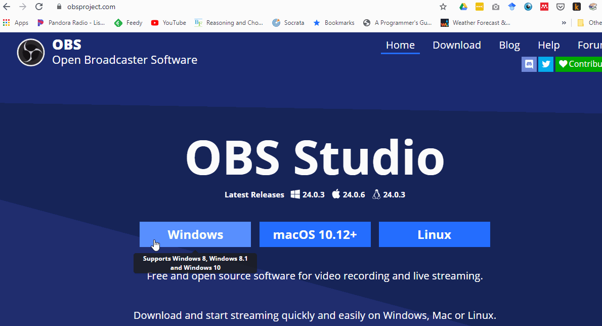
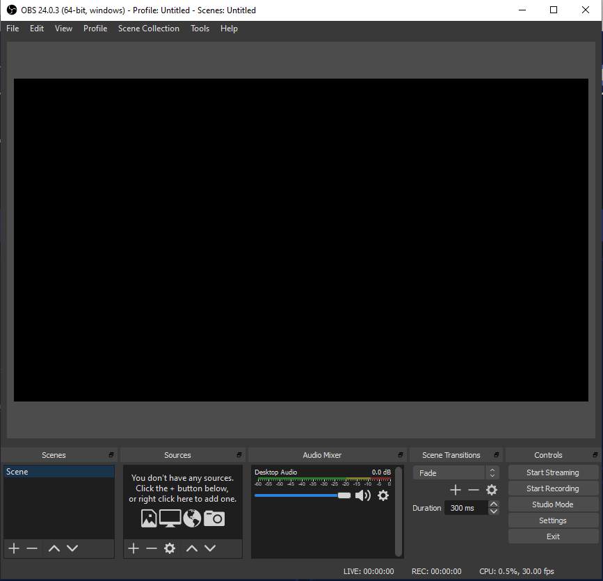
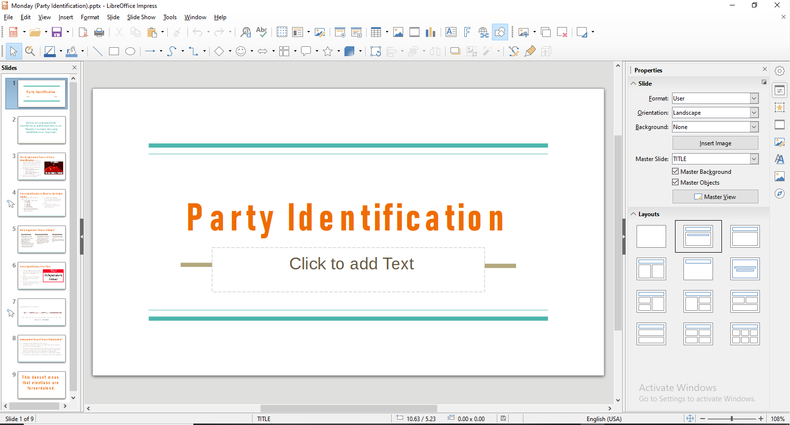
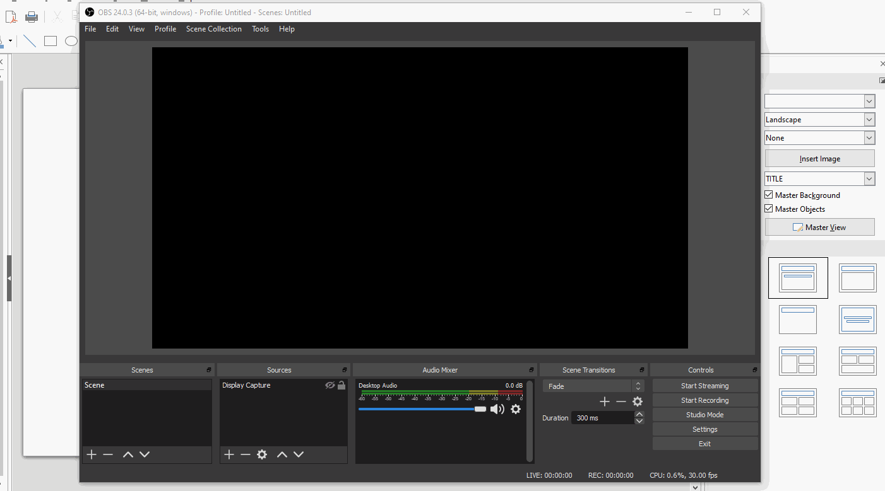
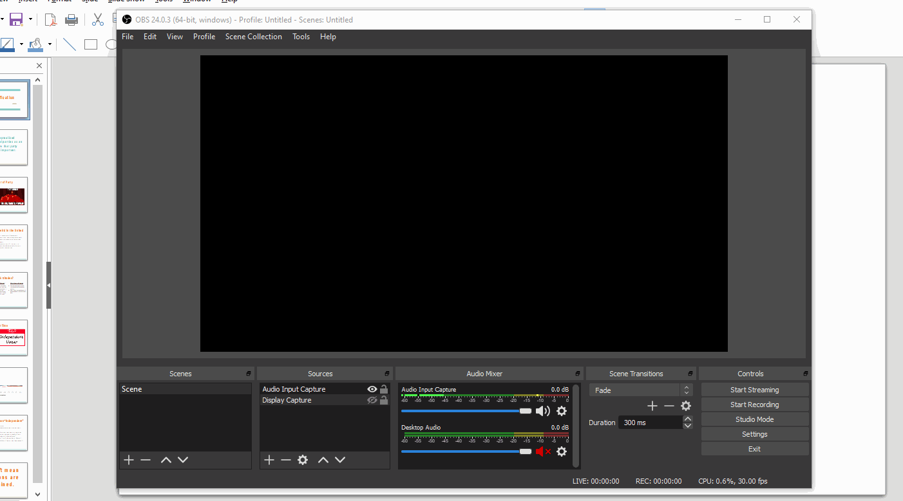

Capturing a PowerPoint/Google Slides Lecture with Open Source Software
A number of schools are either shutting down or transitioning classes to an online format due to the novel corona virus (also known as COVID-19). (UF just let us know Yesterday that, while it isn’t yet mandatory, we should start transitioning sooner rather than later). This isn’t going to be an easy transition for a lot of us—students and faculty alike. Not everyone makes living on the Internet basically a second job. I’m planning on writing a workflow for my intended solution—hosting lectures live in a Discord server with password-protected Google Forms as attendance—in the next few days. But I know that many people are going to feel that simpler is better for them. I got this text from a good friend of mine yesterday as we were talking about it:
Can I just like…screen capture my computer while I’m presenting and just upload that?
Absolutely! And it’s easy to do with some Open Source software. In fact, you can do it with whatever your presentation software of choice (PowerPoint, Google Slides, LibreOffice, Beamer, etc.). This is especially helpful because, while PowerPoint offers an easy recording option, the same can’t be said for everything. So, for this post, I’m going to walk y’all through how to use OBS to record yourself giving a PowerPoint presentation so you can upload it to your students.
Contents
## OBS (What it is and How to Install it)
What is OBS?
Open Broadcaster Software (OBS) is a video recording and streaming platform released by the OBS Project. Its main software platform, OBS Studio, is incredibly popular among video game players and streamers on Twitch and YouTube. It has a number of bells and whistles that makes it really well-suited for these creators. But, most importantly for our purposes, it allows you to capture a program running on your computer, mix in audio, and export that into a file that you can easily upload to your file/video-hosting site of choice.
How to Install it
First, go to the OBS Project website. Right there on the front of the screen, you should see three links that lead to downloads based off of your computer’s operating software. (You are going to need about 250 MB of free space in order to install it). Click on whichever link matches your system. Once you do that, it should begin downloading your software automatically. From there, install it as you would anything else. (Personally, I recommend just keeping everything at the default installation settings).

Once you’ve installed OBS Studio, go ahead and open it like you would a normal program. (If you kept the box checked that read “Open after installation” while you were installing it, the program should do that for you automatically). You should see a screen that looks something like this:

First thing you’re going to want to do is decide how and where you’re going to export your screen capture. For Windows 10 (my operating system), OBS defaults to using an .mkv recording format and plopping the output into your “videos” folder. That file location may or may not work for you—I’m going to tell you how to change it if doesn’t—but you’re definitely going to need to change the recording format to mp4 (which is more universally accepted on video sharing platforms than mkv).
Look down in the lower right-hand corner and click the Settings button. A new screen should pop up. Look at the left-hand pane and click Output. Go down to the drop-down menu for Recording Format and change it from mkv to mp4. If you want to change where the video will end up on your computer, click on the Browse button that’s in-line with Recording Path. Then just navigate to the file location that you want to export the file to. I’m going to put it where I put the other media I’m using for this blogpost. You can put it wherever you want. (Or, if you’re cool with it exporting to your default videos folder, you don’t have to mess with it at all). Make sure you hit the Apply button before either clicking OK or exiting the screen. Otherwise, your settings won’t have saved.1

Now let’s go ahead and get it capturing a PowerPoint presentation. Open up PowerPoint or your presentation platform of choice. I’m going to be using a LibreOffice version of my latest lecture from the Political Behavior class I’m teaching right now. It was originally made in Google Slides, so apologies if it looks a little wonky.

Now that your presentation is open, go back to OBS. Go down to the lower left-hand panel named Sources. Click on the + icon. Start at the top and scroll down to where it says Display Capture. A new window will pop open titled something like “Create/Select Source.” Click OK. The screen should start showing a live view of your computer display. If you use multiple screens, you can go down to Display to set which one you’d like to record. If you have one screen (or, equivalently, if you set your display to be the same screen that OBS is sitting in), you’ll get a pretty trippy look into infinite recursion.2 Don’t worry. The infinite loop will not be visible during your presentation.
Click OK to finish setting up your visual source. (You can click the eye icon in the sources panel to kill the visual feed if you don’t want to look at the recursion while you set everything else up. I’ll do that so you know how and so it won’t be a distraction.) OBS will capture anything that you have on this display. So if you want to capture a Google Slides (or Beamer presentation), simply put your browser window (pdf viewer) on that screen and OBS will capture that. This process allows you to use whatever presentation software you want. If you’re teaching programming or some kind of quantitative methods class, you can even have it display R/Stata/SPSS!3

Next, we’ll set up your voice-over (that way your students aren’t just watching slides silently slipping by). You have a few options here. Most laptops (and some PCs) have built in microphones. While these aren’t the highest quality, they should do in a pinch. If you have a headset that you use to make Skype calls and the like, that can work as well. Thanks to my YouTubing, I happen to have a Blue Yeti Snowball on hand. (The Snowball is a solid entry-level podcast/vlogging microphone that’s really reasonably priced). In any event, you can go as basic or as fancy as you like. As long as you plug it in and it’s recognized by your computer, you can use it to record your audio.
Once you’ve plugged in your microphone (or headset) of choice, go back down to the Sources panel and click on the + again. This time, stay at the top and click the button that says Audio Input Capture. A new panel will pop open that will say something like “Create/Select Source.” Click OK. A new screen will pop up which will ask you which Device you want to use. If you are using a device (like a headset or dedicated microphone) that isn’t your computer’s default audio input channel, click the drop-down menu and select it by name.
Once you do that, click OK. You’ll now see a new item in the Audio Mixer pannel in the bottom-center of the screen. From here, you can mix the levels of your input channel and your desktop audio by moving the sliders. (If they’re further to the right, the audio from that source will be louder; further to the left and they’ll be softer.) My personal preference is to totally silence the audio coming from the Desktop (I don’t want the video to get random bings from Outlook and distract the viewers).

Now that you’ve got everything set up, you’re ready to record. From here you’ve got a couple of options. If you’re working on just one screen, you’re going to have to minimize OBS during recording so that you avoid the infinite recursion. That’s totally fine. OBS will continue recording after you minimize the program so long as you don’t exit out of it entirely. But you will have the infinite loop for however long it takes for you to click Start Recording and minimize in the beginning and to restore the window and click Stop Recording at the end. If you think your students won’t mind—although, I’ll be candid and tell you that they probably will—you could just leave it in. If you have a video editor (like iMovie), you could just chop those bits off and re-export it. Or, my preferred option, you can set it up so that you can minimize the program, press a specific button on your keyboard, and start recording without anyone having to see all the looping.
Go back to the lower-right part of the screen and click on the Settings button again. Go to the left-hand panel and click where it says Hotkeys (second item from the bottom). Go down to where it says Start Recording and click on the field to the right. Your mouse cursor should start blinking. Then press the button on your keyboard that you want to act as the shortcut for your recording command. I’m going to use 0 on my keyboard’s number pad, but you can use any key that you’d like. I’d just suggest not picking something that you might accidentally hit while presenting!
Once you’ve made your choice, click apply.
Now that you’ve got all of your settings ready to go, you’re ready to start recording your presentation! If you turned off the infinite loop, click the eye logo again to turn the visual feed back on. Then minimize (not exit) out of OBS Studio. Start up your presentation. Then, when you’re ready, press the button on your keyboard that starts your recording. (If you decided not to use the hotkeys, click Start Recording before you minimize out of OBS). Talk clearly into your microphone and make your way through the slides.

Once you’ve finished, press the button on your keyboard that stops your recording. Reopen OBS. DO NOT IMMEDIATELY CLOSE THE PROGRAM. OBS Studio takes a while to encode your video into an mp4 format. If you close the program while it’s still in progress, you’ll just have a corrupted mess that can’t be opened let alone watched. Personally, I like to have my file viewer open to the directory that I decided to export my video to. It’ll update when the file has finished exporting.

Once you’ve finished the video, you have something that you can upload to your preferred elearning platform (Blackboard or Canvas) or to YouTube. I uploaded a short demo to my personal YouTube (rather than to the Professor Politics channel) where I went through the first couple minutes of the lecture so you guys can see a “final” product.
As I ever-so-slyly referenced in the last paragraph, I’ve been making multimedia content for the web for a while now—pretty close to about 6-7 years. I’m not by any means an unimpeachable expert, but I’ve picked up a few things as I’ve gone along. So I wanted to pass along a few tips for when you’re recording your presentation:
Keep it brief: Unless you’ve got a helluva radio voice (and an engaging personality to boot), keep your presentation shorter rather than longer. The best video educators on YouTube don’t tend to go much longer than 10-15 minutes—and they’ve usually got some kind of visual animation and music to accompany them. You won’t keep your students’ eyes on the screen for much longer than that. Even if they do, their eyes will be totally glassed over or they’ll have Facebook open in another page. (That may not sound much different than class normally for some, but trust me. It is.) I know that’s frustrating because you probably have a lot more material than that. Trim it down as best you can.
If you can’t keep it brief, do it in chunks: If you absolutely cannot cut your material down to below 10-15 minutes, make multiple, shorter videos. Find natural stopping points in your presentation and cut your videos down to about 5-7 minutes. Set up a silent alarm for about 6 minutes that’ll help you wrap it up. This technique won’t let you get away with uploading, like, 10 videos—but you can use it to upload 3-6 that’ll get far better engagement than if you just kept talking for 20-30 uninterrupted minutes.
Don’t eat the mic: watch how close you’re getting to your audio input. You don’t want your lecture to get interrupted by crackles or Darth Vader-esque heavy breathing.
Talk slower. Then talk slower than that: Some people (like me) are cursed with a rapid cadence. When we talk to people face-to-face, it’s easier to understand us because a lot of our meaning is translated through non-verbal means. But when it’s just you and the slides, fast talking will be the death of comprehension. Plus, if you’re not used to presenting using a microphone, you’re probably nervous about it. Even if you don’t think you’re nervous, you probably are. That’ll bleed over into how quickly you’re going through the material. So if you just finished a video and/or chunk and are thinking “wow, I sure managed to clear through those slides really quickly!”—you’re probably going to have to re-record it if you want students to know what the hell you were actually saying.
Avoid being monotone: Your students probably understand that this isn’t what you signed-up for; no one’s asking for an Oscar-worthy performance. And unless you’ve got experience with acting, improv, or public speaking, it’ll probably come off as more cringy if you shoot for one. But don’t be like the teacher from Ferris Bueller’s Day Off, droning on about the Smoot-Hawley Tariff Act. Try to add some variation in your voice every now and then. Change up your volume, pitch, and tone just as you would if you were speaking before a group.
Don’t strive for perfection: Don’t try to make this a Ted Talk. Don’t try to make this a YouTube video. Don’t make this into a job talk or conference presentation. Don’t think that you have to have no pauses, no flubs, no imperfections. If you would say “oops, excuse me, what I meant was…” in class, you can say it here. It’s fine. 9 times out of 10, you’ll notice it far more than anyone else will.
Practice before you upload: Do a couple of short practice runs (1-2 minutes) to make sure you’ve got your pacing, microphone placing, and all-around jitters sorted out before you dive in to the whole thing. As I mentioned, I’ve been doing this for years and I still have to do this. We all do. It’s better to get all the little kinks fixed before you upload your videos and you realize, to your sinking horror, there’s something that makes it utterly unwatchable.
This is probably going to be a stressful time for both you and your students. This transition (from offline to online) has been abrupt for and it’s having very real consequences on the day-to-day lives of everyone involved. Hopefully, this tutorial will be able to ease that transition, and diminish some of those smaller issues.
Depending on how updated your graphics drivers are, you might also have to change your
Encodersettings fromHardwaretoSoftware.For what it’s worth, I had to do this—but your mileage will vary.↩︎As a bonus, you’ll also see the gif capturing software I’m using for this tutorial, LICEcap in action.↩︎
I’m choosing to play Switzerland in the immemorial methods war.↩︎